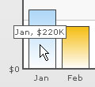
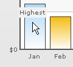
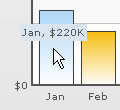
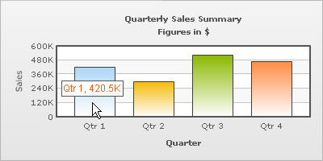
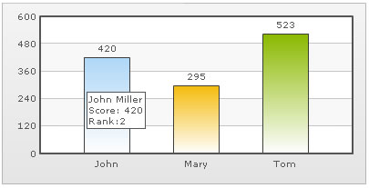

| XML/JSON Attributes for Tool Tip |
A tool-tip is shown when the mouse is hovered over a particular data point. It shows the following information:
|
 You can opt not to show the tool tip using showToolTip='0' attribute. |
<chart showToolTip='0'...> To show the tool-tip without shadow, you may set: |
<chart showToolTipShadow='0' ...> |
| Custom Tool Text |
You can set a custom tool tip for any of the data points using tooltext attribute of the <set> element which is used to define the individual data elements. <chart caption='Monthly Revenue' xAxisName='Month' yAxisName='Revenue' numberPrefix='$' showValues='0'> <set label='Jan' value='220000' toolText='Highest'/> <set label='Feb' value='90000' /> ... </chart> {
The above will yield the following result:  |
| Customizing the tool tip |
You can customize the background & border color of the tool tip using the toolTipBorderColor and toolTipBgColor attributes respectively. The colors should be without the '#' symbol. <chart ... toolTipBorderColor='D9E5F1' toolTipBgColor='D9E5F1'> This will yield the following result:  |
| Specifying font properties for tool tip using Styles |
Using Styles, you can set individual font properties for different text on the chart. Here, we will customize the font properties of the tool tip using Styles to have the following end result: The data for this chart is as under. To read more on Styles, please refer to FusionCharts XT Styles. |
<chart caption='Quarterly Sales Summary' subcaption='Figures in $' xAxisName='Quarter' yAxisName='Sales' showValues='0' >
<set label='Qtr 1' value='420500' />
<set label='Qtr 2' value='295400' />
<set label='Qtr 3' value='523400' />
<set label='Qtr 4' value='465400' />
<styles>
<definition>
<style name='myToolTipFont' type='font' font='Arial' size='12' color='FF5904'/>
</definition>
<application>
<apply toObject='ToolTip' styles='myToolTipFont' />
</application>
</styles>
</chart>{
"chart":{
"caption":"Quarterly Sales Summary",
"subcaption":"Figures in $",
"xaxisname":"Quarter",
"yaxisname":"Sales",
"showvalues":"0"
},
"data":[{
"label":"Qtr 1",
"value":"420500"
},
{
"label":"Qtr 2",
"value":"295400"
},
{
"label":"Qtr 3",
"value":"523400"
},
{
"label":"Qtr 4",
"value":"465400"
}
],
"styles": {
"definition": [
{
"name": "myToolTipFont",
"type": "font",
"font": "Arial",
"size": "12",
"color": "FF5904"
}
],
"application": [
{
"toobject": "ToolTip",
"styles": "myToolTipFont"
}
]
}
}
|
| Tool Tip in multiple lines |
FusionCharts XT allows you to put your tool tips in multiple lines with a little manual tweaking. Consider the XML/JSON below: |
<chart>
<set label='John' value='420' tooltext='John Miller{br}Score: 420{br}Rank:2'/>
<set label='Mary' value='295' tooltext='Mary Evans{br}Score: 295{br}Rank:3'/>
<set label='Tom' value='523' tooltext='Tom Bowler{br}Score: 523{br}Rank:1'/>
</chart>{
"chart":{},
"data":[{
"label":"John",
"value":"420",
"tooltext":"John Miller{br}Score: 420{br}Rank:2"
},
{
"label":"Mary",
"value":"295",
"tooltext":"Mary Evans{br}Score: 295{br}Rank:3"
},
{
"label":"Tom",
"value":"523",
"tooltext":"Tom Bowler{br}Score: 523{br}Rank:1"
}
]
}
In the above data, to add a line break in the tool-tip, we've used the pseudo code {br}. When you now see the chart, you'll get the following output:  |